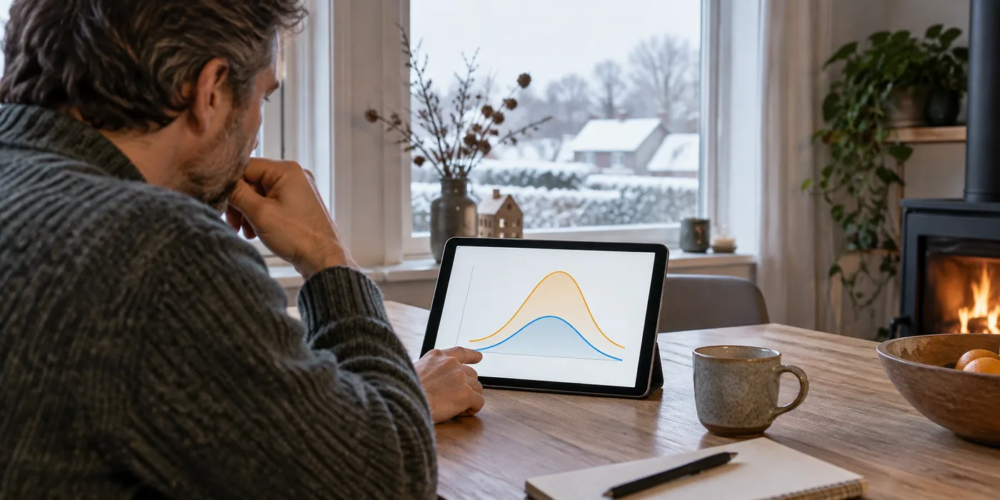

Vraag welke maanden onderzocht zijn
Laat aangeven of het advies een volledig jaar, enkele meetweken of een standaardprofiel gebruikt. Bespreek welke informatie ontbreekt. De beschikbare kwartierwaarden van Fluvius kunnen helpen om perioden te vergelijken, maar productiegegevens van zonnepanelen kunnen aanvullend nodig zijn. Vraag de installateur die verschillende gegevensbronnen te benoemen.
Scheid zonnestroom en laden van het net
Vraag hoeveel energie volgens het voorstel uit eigen productie komt en hoeveel uit netafname. Als slim laden onderdeel van de berekening is, moeten de contractaannames en kosten zichtbaar zijn. Vermijd dat twee besparingsmodellen op dezelfde opgeslagen kilowattuur worden gestapeld zonder uitleg.

Vergelijk een kleinere variant
Vraag wat een kleinere batterij in hetzelfde winter- en jaarprofiel zou doen. Laat zien welke extra nuttige energie de grotere variant kan verschuiven en welke meerprijs daarvoor nodig is. De juiste keuze volgt niet uitsluitend uit het jaarlijkse totaalverbruik. Timing en beschikbare laadmomenten horen bij dezelfde afweging.
Vraag hoe gevoelig de uitkomst is
Laat de installateur toelichten welke verandering in verbruik, productie of contract het advies kan beïnvloeden. Gebruik geen toekomstige tariefverwachting als vaststaand feit. Vraag een variant met minder laadmogelijkheden en dezelfde investering. Je hoeft geen ingewikkeld model na te bouwen: een korte vergelijking van de uitgangspunten maakt al duidelijk waar zekerheid eindigt. Bewaar vooral welke energiestromen de besparing moeten opleveren en welke informatie daarover gemeten of geschat is.
Een praktisch voorbeeld
Een offerte gebruikt drie zonnige weken om een grote batterij te adviseren. Vraag een jaarvariant met donkere maanden en hetzelfde verbruiksprofiel. Zo wordt duidelijk welke onzekerheid de beperkte meetperiode veroorzaakt.
Illustratief scenario, geen klantcase.
Neem dit mee naar je gesprek
- Periode van de simulatie
- PV-data naast meterdata
- Netladen apart berekend
- Kleinere variant met dezelfde aannames
Veelgestelde vraag
Kan een thuisbatterij zomerstroom bewaren voor de winter?
Een huishoudelijk batterijsysteem is bedoeld voor kortere verschuivingen, niet voor seizoensopslag.
Bron en achtergrond
Fluvius: officiële of technische achtergrond bij dit onderwerp ↗
Geraadpleegd op 13 oktober 2026. De praktische checklist en het voorbeeld zijn redactionele uitwerkingen. Fabrikantinformatie geldt voor de beschreven producten; ze is geen algemene garantie voor andere systemen.
Wat betekent dit voor jouw woning?
Gebruik de calculator voor een eerste indicatie. Een vakman beoordeelt jouw situatie en bevestigt de uitvoering en definitieve prijs.
Bekijk de thuisbatterijcalculator →